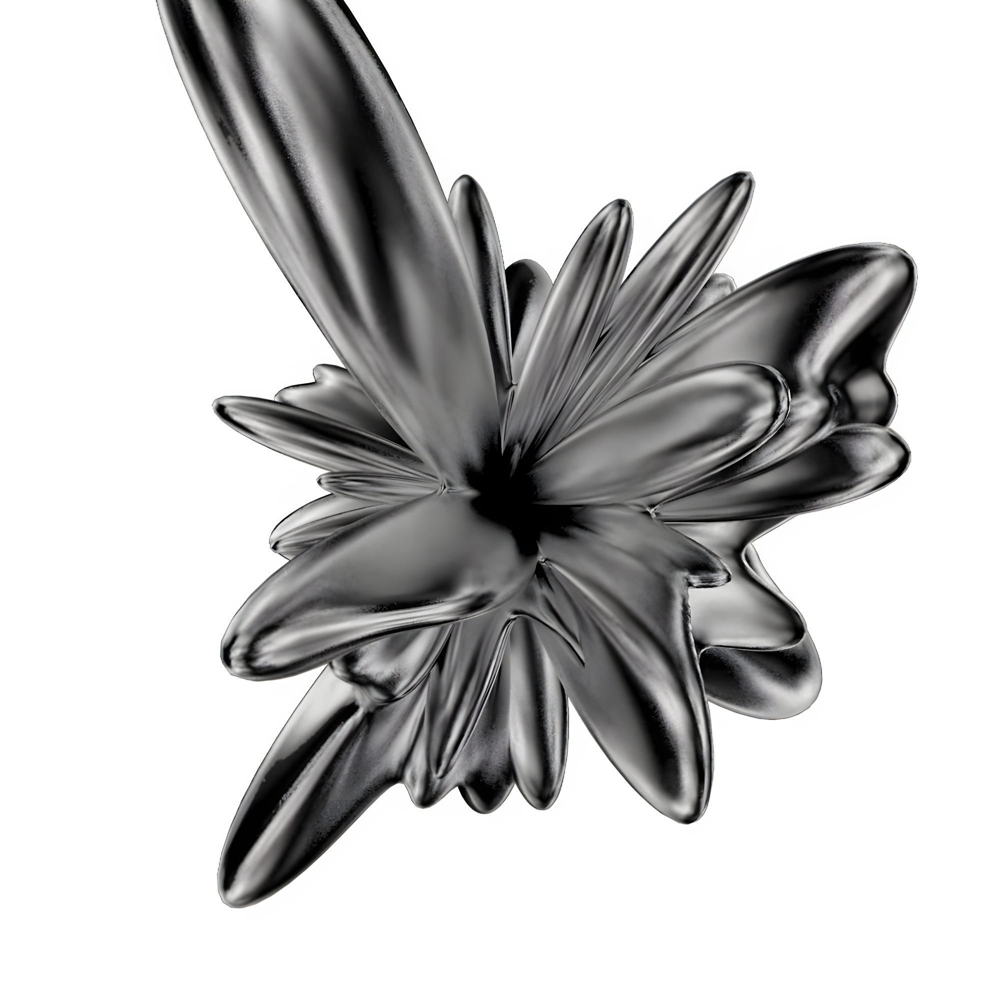
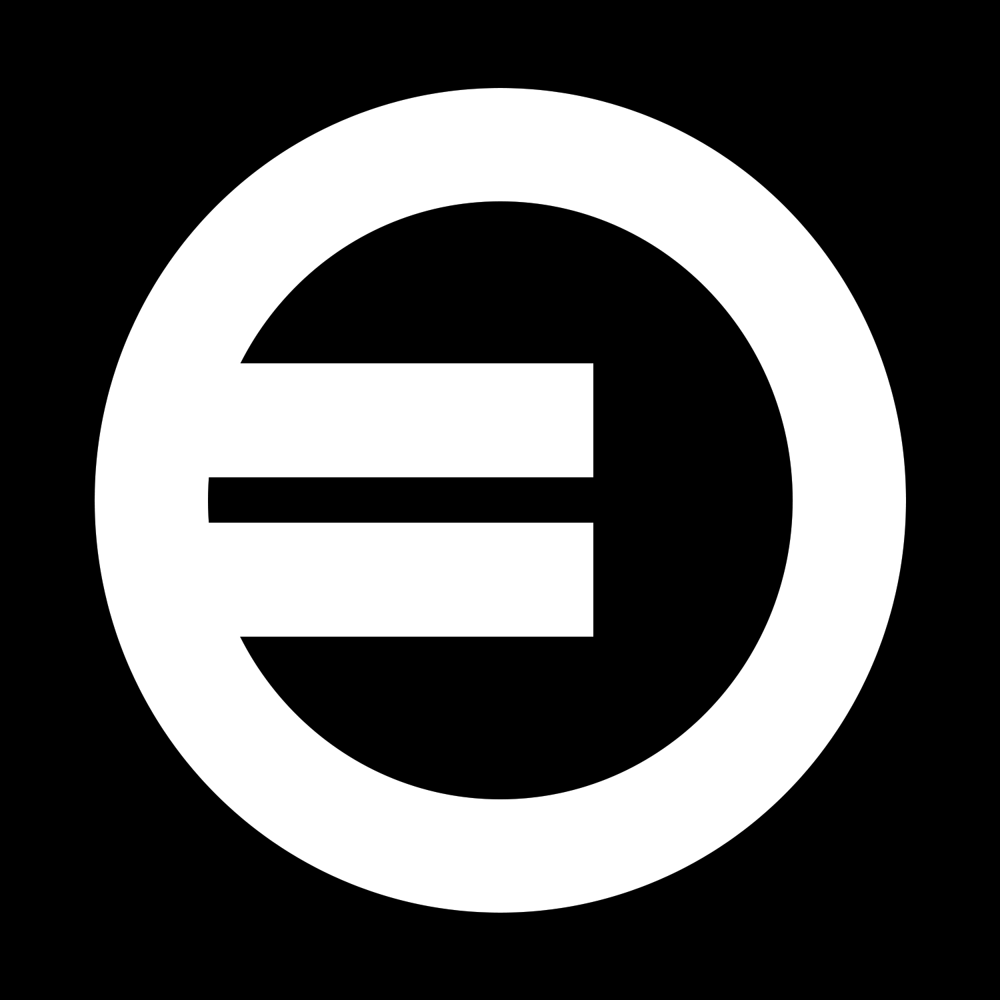
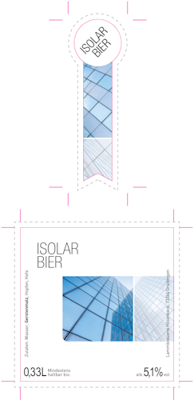
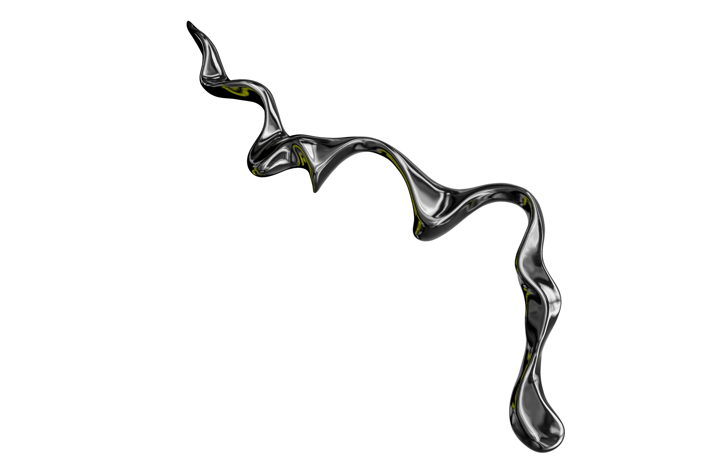

Translocating between dimensions,
blending the energy of 2D and the depth of 3D
to help your projects move beyond
static visuals into living experiences.

/ABOUT ME Originally from Iran, I've always been curious about how design and digital systems connect. Over the past eight years I've built experience in both creative and technical sides of marketing. In 2025 I completed my bachelor's thesis exploring content creation and automation through AI.





/Eye-catching Hybrid Designs Exploring the synergy between two design dimensions to achieve balance between simplicity and depth. This includes everything from minimalist logos to complex dimensional artworks, all designed to catch attention at first glance and hold it through refined detail, vibrant color, and modern composition.
/3D Visuals
Using Maxon Cinema 4D to craft distinctive 3D objects and product renders that emphasize material, lighting, and design precision. The work ranges from smooth, fluid shapes to industrial-grade textures.


.png)
.png)
/Online campaigns
Green Delivery App
Sustainability meets a cool, modern aesthetic. The campaign work combines fresh color, simple forms and smooth motion to create a visual identity that feels both conscious and contemporary.
.png)

Isolar Glass Solutions
Modern B2B ready visuals designed to express precision, quality and technical confidence. The work focuses on clean structure, clear communication and a strong, professional visual presence.


/Digital Experience
Projects created during university that explore how users interact with digital spaces in both app and web environments. The work focuses on building clear paths, smooth navigation and visual systems that feel coherent and accessible. Each interface aims to translate ideas into experiences that are easy to understand and enjoyable to use.


Let's work together and move your project forward with a modern and precise direction :)
/CONTACT ME